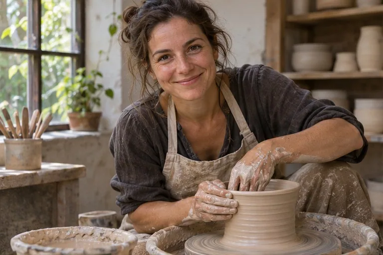
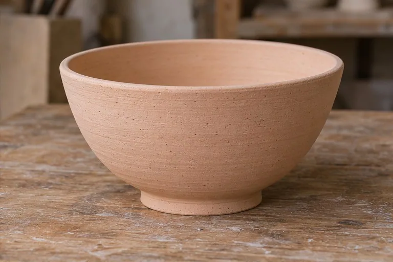
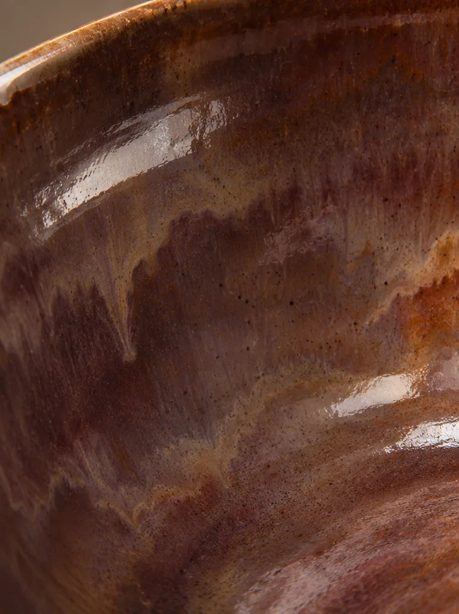
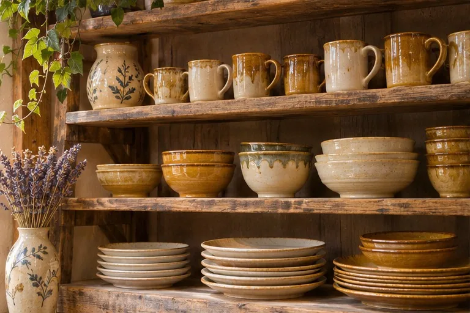
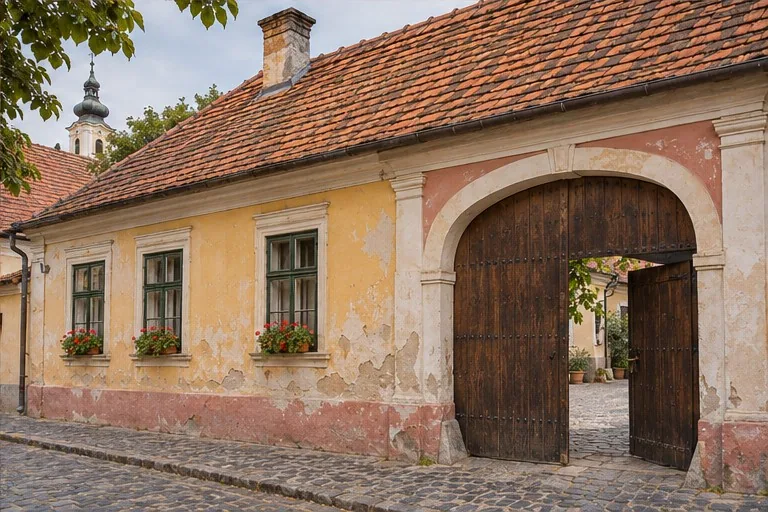

Én és az Agyagpad
Fehér Dóra vagyok, keramikus. Régebben rendezvényeket szerveztem. Szerettem, amikor egy vacsorára végre mindenki leült, bár én olyankor is a következő fogás idejét néztem.
Egy barátnőm egyszer elhívott korongozni. Kicsit ferde tálkát készítettem, és úgy eltelt vele a délután, hogy egyszer sem jutott eszembe az órám. A tálka azóta is ott van az előszobámban. Abba dobom a kulcsomat, amikor hazaérek.
Munka után visszajártam a műhelybe, később kitanultam a mesterséget. Mire Szentendrén kiadó lett ez a kis udvari műhely, már tudtam, hogy ebből szeretnék élni. Az ablak melletti helyre rögtön odaképzeltem a korongomat. Ma is ott dolgozom.

Így készülnek a darabok



Kerámiák a műhelyboltban

Bögrék
Ha ajándékba választasz, gondolj arra, hogyan issza a kávéját az, akinek viszed. A kis csésze vagy egy jó marokra való bögre illene inkább a kezébe?
Tálak
Egy mélyebb tálban jól elfér a reggeli zabkása, egy kisebben épp egy marék meggy. A boltban egymás mellé teheted a formákat.
Tányérok
Egy tányérnál a peremet szeretem utoljára végigsimítani. Ez az a rész, amihez hozzáérsz, amikor az asztalra teszed.
Nézz be hozzám Szentendrén!
A műhelyboltban csütörtöktől vasárnapig 10:00–18:00 között várlak. Ha magad készítenéd el az első tálkádat, a tanfolyamoknál találsz hozzá időpontot.
Megnézem a tanfolyamokat